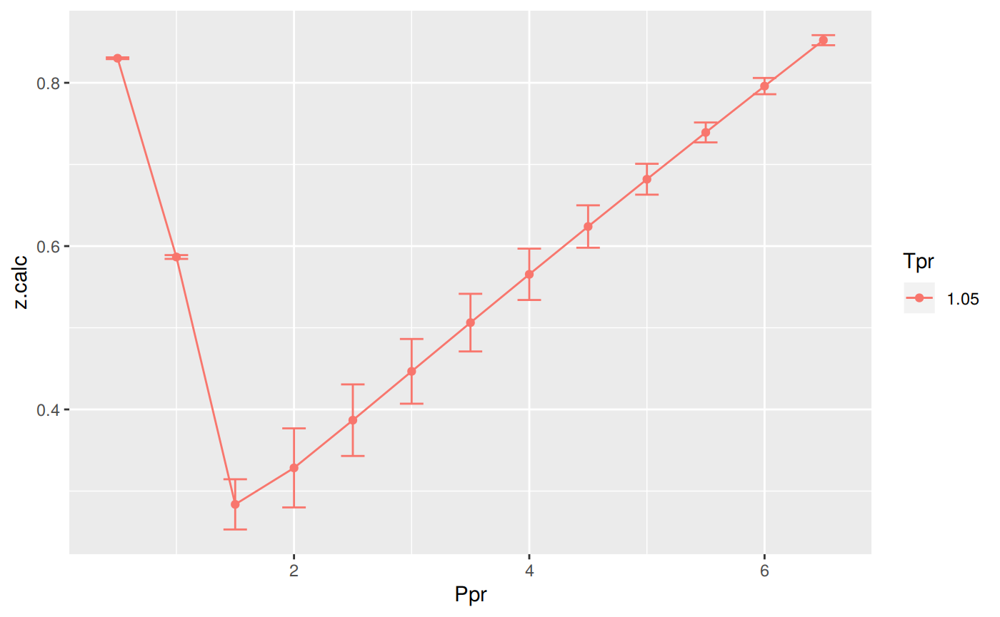
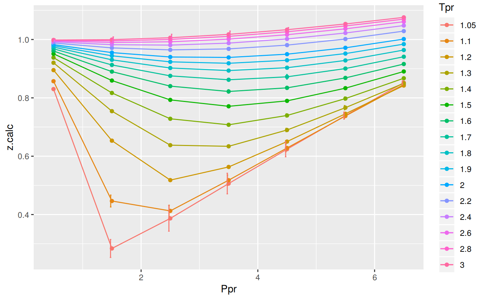
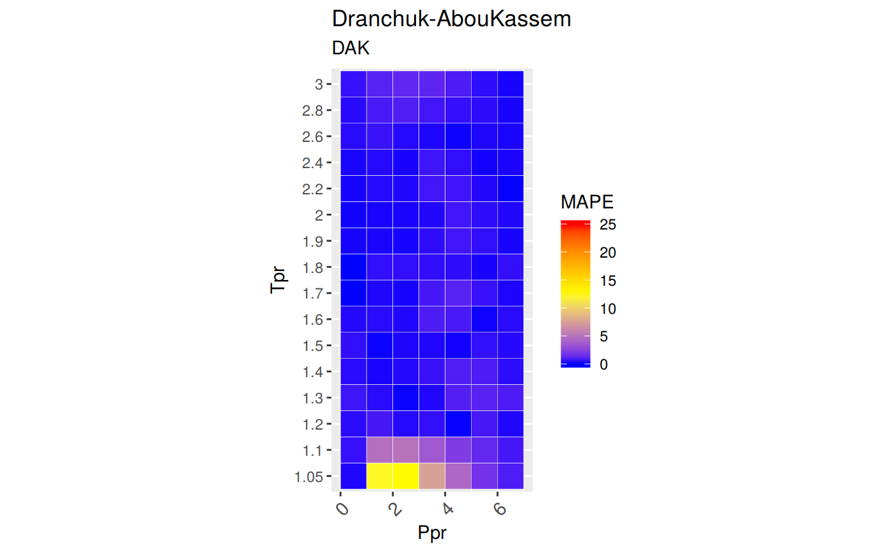

DAK correlationThe work by P.M. Dranchuk and J.H. Abou-Kassem was looking to examine z outside the regions established by the Standing-Katz chart. They used as a basis the generalized Starling equation of state. They provided the code in FORTRAN. See (Dranchuk and Abou-Kassem 1975)
z at selected Ppr and Tpr
Use the the correlation to calculate z and from Standing-Katz chart obtain z a digitized point at the given Tpr and Ppr.
# get a z value
library(zFactor)
ppr <- 1.5
tpr <- 2.0
z.calc <- z.DranchukAbuKassem(pres.pr = ppr, temp.pr = tpr)
# get a z value from the SK chart at the same Ppr and Tpr
z.chart <- getStandingKatzMatrix(tpr_vector = tpr,
pprRange = "lp")[1, as.character(ppr)]
# calculate the APE
ape <- abs((z.calc - z.chart) / z.chart) * 100
df <- as.data.frame(list(Ppr = ppr, z.calc =z.calc, z.chart = z.chart, ape=ape))
rownames(df) <- tpr
df
# HY = 0.9580002; # DAK = 0.9551087 Ppr z.calc z.chart ape
2 1.5 0.9551087 0.956 0.09322868z at selected Ppr and Tpr=1.1
From the Standing-Katz chart we read z at a digitized point:
library(zFactor)
ppr <- 1.5
tpr <- 1.1
z.calc <- z.DranchukAbuKassem(pres.pr = ppr, temp.pr = tpr)
# From the Standing-Katz chart we obtain a digitized point:
z.chart <- getStandingKatzMatrix(tpr_vector = tpr,
pprRange = "lp")[1, as.character(ppr)]
# calculate the APE (Average Percentage Error)
ape <- abs((z.calc - z.chart) / z.chart) * 100
df <- as.data.frame(list(Ppr = ppr, z.calc =z.calc, z.chart = z.chart, ape=ape))
rownames(df) <- tpr
df Ppr z.calc z.chart ape
1.1 1.5 0.4463987 0.426 4.78842At lower
Tprwe can see that there is some difference between the values of z from the DAK calculation and thezvalue read from the Standing-Katz chart. See theAPE.
z for combinations of Ppr and Tpr
In this example we provide vectors instead of a single point. With the same ppr and tpr vectors that we use for the correlation, we do the same for the Standing-Katz chart. We want to compare both and find the absolute percentage error or APE.
# test DAK with 1st-derivative using the values from paper
ppr <- c(0.5, 1.5, 2.5, 3.5, 4.5, 5.5, 6.5)
tpr <- c(1.05, 1.1, 1.7, 2)
# calculate using the correlation
z.calc <- z.DranchukAbuKassem(ppr, tpr)
# With the same ppr and tpr vector, we do the same for the Standing-Katz chart
z.chart <- getStandingKatzMatrix(ppr_vector = ppr, tpr_vector = tpr)
ape <- abs((z.calc - z.chart) / z.chart) * 100
# calculate the APE
cat("z.correlation \n"); print(z.calc)
cat("\n z.chart \n"); print(z.chart)
cat("\n APE \n"); print(ape)z.correlation
0.5 1.5 2.5 3.5 4.5 5.5 6.5
1.05 0.8300683 0.2837318 0.3868282 0.5063005 0.6239783 0.7392097 0.8521762
1.1 0.8570452 0.4463987 0.4125200 0.5178068 0.6281858 0.7378206 0.8458725
1.7 0.9681353 0.9128087 0.8753784 0.8619509 0.8721085 0.9003962 0.9409634
2 0.9824731 0.9551087 0.9400752 0.9385273 0.9497137 0.9715388 1.0015560
z.chart
0.5 1.5 2.5 3.5 4.5 5.5 6.5
1.05 0.829 0.253 0.343 0.471 0.598 0.727 0.846
1.10 0.854 0.426 0.393 0.500 0.615 0.729 0.841
1.70 0.968 0.914 0.876 0.857 0.864 0.897 0.942
2.00 0.982 0.956 0.941 0.937 0.945 0.969 1.003
APE
0.5 1.5 2.5 3.5 4.5 5.5
1.05 0.12887088 12.14694898 12.77790878 7.4947969 4.3441895 1.6794701
1.1 0.35658638 4.78841969 4.96692005 3.5613696 2.1440308 1.2099607
1.7 0.01397555 0.13033558 0.07096218 0.5776995 0.9384799 0.3786176
2 0.04818209 0.09322868 0.09827500 0.1629967 0.4988064 0.2620070
6.5
1.05 0.7300441
1.1 0.5793746
1.7 0.1100436
2 0.1439679You can see errors of 12.15% and 12.78% in the isotherm
Tpr=1.05atPpr0.5 and 2.5. Other errors, greater than one, can also be found at the isothermTpr=1.1: 4.97%. Then, the rest of theTprcurves are fine.
isotherms
Applying the function summary over the transpose of the matrix:
sum_t_ape <- summary(t(ape))
sum_t_ape 1.05 1.1 1.7 2
Min. : 0.1289 Min. :0.3566 Min. :0.01398 Min. :0.04818
1st Qu.: 1.2048 1st Qu.:0.8947 1st Qu.:0.09050 1st Qu.:0.09575
Median : 4.3442 Median :2.1440 Median :0.13034 Median :0.14397
Mean : 5.6146 Mean :2.5152 Mean :0.31716 Mean :0.18678
3rd Qu.: 9.8209 3rd Qu.:4.1749 3rd Qu.:0.47816 3rd Qu.:0.21250
Max. :12.7779 Max. :4.9669 Max. :0.93848 Max. :0.49881 We can see that the errors in
zare considerable with a Min. : 0.1289 % and Max. :12.7779 % forTpr=1.05, and a Min. :0.3566 % and Max. :4.9669 % forTpr=1.10. We will explore later a comparative tile chart where we confirm these early calculations.
Tpr
library(zFactor)
# enter vectors for Tpr and Ppr
tpr2 <- c(1.2, 1.3, 1.5, 2.0, 3.0)
ppr2 <- c(0.5, 1.5, 2.5, 3.5, 4.5, 5.5)
# get z values from the SK chart
z.chart <- getStandingKatzMatrix(ppr_vector = ppr2, tpr_vector = tpr2, pprRange = "lp")
# We do the same with the HY correlation:
# calculate z values at lower values of Tpr
z.calc <- z.DranchukAbuKassem(pres.pr = ppr2, temp.pr = tpr2)
ape <- abs((z.calc - z.chart) / z.chart) * 100
# calculate the APE
cat("z.correlation \n"); print(z.calc)
cat("\n z.chart \n"); print(z.chart)
cat("\n APE \n"); print(ape)z.correlation
0.5 1.5 2.5 3.5 4.5 5.5
1.2 0.8950631 0.6532419 0.5180675 0.5631805 0.6501377 0.7453363
1.3 0.9203019 0.7543694 0.6377871 0.6339357 0.6898314 0.7663247
1.5 0.9509373 0.8593144 0.7929993 0.7710525 0.7896224 0.8331893
2 0.9824731 0.9551087 0.9400752 0.9385273 0.9497137 0.9715388
3 0.9984498 0.9995529 1.0061111 1.0176846 1.0336417 1.0532809
z.chart
0.5 1.5 2.5 3.5 4.5 5.5
1.20 0.893 0.657 0.519 0.565 0.650 0.741
1.30 0.916 0.756 0.638 0.633 0.684 0.759
1.50 0.948 0.859 0.794 0.770 0.790 0.836
2.00 0.982 0.956 0.941 0.937 0.945 0.969
3.00 1.002 1.009 1.018 1.029 1.041 1.056
APE
0.5 1.5 2.5 3.5 4.5 5.5
1.2 0.23103290 0.57200352 0.17966969 0.3220337 0.02117873 0.5851899
1.3 0.46964046 0.21568687 0.03336463 0.1478274 0.85254906 0.9650399
1.5 0.30984425 0.03659844 0.12603050 0.1366918 0.04779169 0.3362070
2 0.04818209 0.09322868 0.09827500 0.1629967 0.49880636 0.2620070
3 0.35430932 0.93627979 1.16787124 1.0996524 0.70685120 0.2574863We observe that at
Tprabove or equal to 1.2 theDAKcorrelation behaves very well.
isotherms
Applying the function summary over the transpose of the matrix to observe the error of the correlation at each isotherm.
sum_t_ape <- summary(t(ape))
sum_t_ape
# Hall-Yarborough
# 1.2 1.3 1.5 2
# Min. :0.05224 Min. :0.1105 Min. :0.1021 Min. :0.0809
# 1st Qu.:0.09039 1st Qu.:0.2080 1st Qu.:0.1623 1st Qu.:0.1814
# Median :0.28057 Median :0.3181 Median :0.1892 Median :0.1975
# Mean :0.30122 Mean :0.3899 Mean :0.2597 Mean :0.2284
# 3rd Qu.:0.51710 3rd Qu.:0.5355 3rd Qu.:0.3533 3rd Qu.:0.2627
# Max. :0.57098 Max. :0.8131 Max. :0.5162 Max. :0.4338
# 3
# Min. :0.09128
# 1st Qu.:0.17466
# Median :0.35252
# Mean :0.34820
# 3rd Qu.:0.52184
# Max. :0.59923 1.2 1.3 1.5 2
Min. :0.02118 Min. :0.03336 Min. :0.03660 Min. :0.04818
1st Qu.:0.19251 1st Qu.:0.16479 1st Qu.:0.06735 1st Qu.:0.09449
Median :0.27653 Median :0.34266 Median :0.13136 Median :0.13064
Mean :0.31852 Mean :0.44735 Mean :0.16553 Mean :0.19392
3rd Qu.:0.50951 3rd Qu.:0.75682 3rd Qu.:0.26656 3rd Qu.:0.23725
Max. :0.58519 Max. :0.96504 Max. :0.33621 Max. :0.49881
3
Min. :0.2575
1st Qu.:0.4424
Median :0.8216
Mean :0.7537
3rd Qu.:1.0588
Max. :1.1679 We can see that the errors in z with DAK are far lower than Hall-Yarborough with a Min. :0.02118 % and Max. :0.58519 % for Tpr=1.2, and a Min. :0.03336 % and Max. :0.96504 % for Tpr=1.3.
The error bars represent the difference between the calculated values by the Dranchuk-AbouKassem corrrelation and teh values of z read from the Standing-Katz chart.
library(zFactor)
library(tibble)
library(ggplot2)
tpr2 <- c(1.05, 1.1, 1.2, 1.3)
ppr2 <- c(0.5, 1.0, 1.5, 2, 2.5, 3.0, 3.5, 4.0, 4.5, 5.0, 5.5, 6.0, 6.5)
sk_dak_2 <- createTidyFromMatrix(ppr2, tpr2, correlation = "DAK")
as.tibble(sk_dak_2)
p <- ggplot(sk_dak_2, aes(x=Ppr, y=z.calc, group=Tpr, color=Tpr)) +
geom_line() +
geom_point() +
geom_errorbar(aes(ymin=z.calc-dif, ymax=z.calc+dif), width=.4,
position=position_dodge(0.05))
print(p)# A tibble: 52 x 5
Tpr Ppr z.chart z.calc dif
<chr> <dbl> <dbl> <dbl> <dbl>
1 1.05 0.5 0.829 0.8300683 -0.0010683396
2 1.1 0.5 0.854 0.8570452 -0.0030452477
3 1.2 0.5 0.893 0.8950631 -0.0020631238
4 1.3 0.5 0.916 0.9203019 -0.0043019067
5 1.05 1.0 0.589 0.5866751 0.0023248611
6 1.1 1.0 0.669 0.6773731 -0.0083730721
7 1.2 1.0 0.779 0.7784223 0.0005777158
8 1.3 1.0 0.835 0.8372105 -0.0022105338
9 1.05 1.5 0.253 0.2837318 -0.0307317809
10 1.1 1.5 0.426 0.4463987 -0.0203986679
# ... with 42 more rowsWe observe that with Dranchuk-AbouKassem there are still errors or differences between the z values in the Standing-Katz chart and the values obtained from the correlation but they are not as bad as in the HY correlation.
Tpr
This is the isotherm where we see the greatest error.
library(zFactor)
sk_dak_3 <- sk_dak_2[sk_dak_2$Tpr==1.05,]
sk_dak_3
p <- ggplot(sk_dak_3, aes(x=Ppr, y=z.calc, group=Tpr, color=Tpr)) +
geom_line() +
geom_point() +
geom_errorbar(aes(ymin=z.calc-dif, ymax=z.calc+dif), width=.2,
position=position_dodge(0.05))
print(p)
Tpr Ppr z.chart z.calc dif
1 1.05 0.5 0.829 0.8300683 -0.001068340
5 1.05 1.0 0.589 0.5866751 0.002324861
9 1.05 1.5 0.253 0.2837318 -0.030731781
13 1.05 2.0 0.280 0.3284040 -0.048404016
17 1.05 2.5 0.343 0.3868282 -0.043828227
21 1.05 3.0 0.407 0.4466387 -0.039638654
25 1.05 3.5 0.471 0.5063005 -0.035300493
29 1.05 4.0 0.534 0.5654448 -0.031444815
33 1.05 4.5 0.598 0.6239783 -0.025978253
37 1.05 5.0 0.663 0.6818928 -0.018892813
41 1.05 5.5 0.727 0.7392097 -0.012209748
45 1.05 6.0 0.786 0.7959599 -0.009959903
49 1.05 6.5 0.846 0.8521762 -0.006176173DAK correlation for all the Tpr curvesIn this last example, we compare the values of z at all the isotherms. We use the function getCurvesDigitized to obtain all the isotherms or Tpr curves in the Standing-Katz chart that have been digitized. The next function createTidyFromMatrix calculate z using the correlation and prepares a tidy dataset ready to plot.
library(ggplot2)
library(tibble)
# get all `lp` Tpr curves
tpr_all <- getStandingKatzTpr(pprRange = "lp")
ppr <- c(0.5, 1.5, 2.5, 3.5, 4.5, 5.5, 6.5)
sk_corr_all <- createTidyFromMatrix(ppr, tpr_all, correlation = "DAK")
as.tibble(sk_corr_all)
p <- ggplot(sk_corr_all, aes(x=Ppr, y=z.calc, group=Tpr, color=Tpr)) +
geom_line() +
geom_point() +
geom_errorbar(aes(ymin=z.calc-dif, ymax=z.calc+dif), width=.4,
position=position_dodge(0.05))
print(p)
# A tibble: 112 x 5
Tpr Ppr z.chart z.calc dif
<chr> <dbl> <dbl> <dbl> <dbl>
1 1.05 0.5 0.829 0.8300683 -1.068340e-03
2 1.1 0.5 0.854 0.8570452 -3.045248e-03
3 1.2 0.5 0.893 0.8950631 -2.063124e-03
4 1.3 0.5 0.916 0.9203019 -4.301907e-03
5 1.4 0.5 0.936 0.9380124 -2.012440e-03
6 1.5 0.5 0.948 0.9509373 -2.937323e-03
7 1.6 0.5 0.959 0.9606548 -1.654767e-03
8 1.7 0.5 0.968 0.9681353 -1.352833e-04
9 1.8 0.5 0.974 0.9740059 -5.934455e-06
10 1.9 0.5 0.978 0.9786879 -6.879009e-04
# ... with 102 more rowsThe greatest errors are localized in two of the Tpr curves: at 1.05 and 1.1.
# MSE: Mean Squared Error
# RMSE: Root Mean Squared Error
# RSS: residual sum of square
# ARE: Average Relative Error, %
# AARE: Average Absolute Relative Error, %
library(dplyr)
grouped <- group_by(sk_corr_all, Tpr, Ppr)
smry_tpr_ppr <- summarise(grouped,
RMSE= sqrt(mean((z.chart-z.calc)^2)),
MPE = sum((z.calc - z.chart) / z.chart) * 100 / n(),
MAPE = sum(abs((z.calc - z.chart) / z.chart)) * 100 / n(),
MSE = sum((z.calc - z.chart)^2) / n(),
RSS = sum((z.calc - z.chart)^2),
MAE = sum(abs(z.calc - z.chart)) / n(),
RMLSE = sqrt(1/n()*sum((log(z.calc +1)-log(z.chart +1))^2))
)
ggplot(smry_tpr_ppr, aes(Ppr, Tpr)) +
geom_tile(data=smry_tpr_ppr, aes(fill=MAPE), color="white") +
scale_fill_gradient2(low="blue", high="red", mid="yellow", na.value = "pink",
midpoint=12.5, limit=c(0, 25), name="MAPE") +
theme(axis.text.x = element_text(angle=45, vjust=1, size=11, hjust=1)) +
coord_equal() +
ggtitle("Dranchuk-AbouKassem", subtitle = "DAK")
The greatest errors are localized in two of the Tpr curves: 1.05 and barely at 1.1. But the errors are smaller than that we saw in the
HYplot.
Tpr and Ppr values that show more errorThe MAPE (mean average percentage error) gradient bar indicates that the more red the square is, the more error there is.
library(dplyr)
sk_corr_all %>%
filter(Tpr %in% c("1.05", "1.1")) %>%
ggplot(aes(x = z.chart, y=z.calc, group = Tpr, color = Tpr)) +
geom_point(size = 3) +
geom_line(aes(x = z.chart, y = z.chart), color = "black") +
facet_grid(. ~ Tpr) +
geom_errorbar(aes(ymin=z.calc-abs(dif), ymax=z.calc+abs(dif)),
position=position_dodge(0.5))Finally, the dataframe with the calculated errors between the z from the correlation and the z read from the chart:
as.tibble(smry_tpr_ppr)# A tibble: 112 x 9
# Groups: Tpr [?]
Tpr Ppr RMSE MPE MAPE MSE RSS
<chr> <dbl> <dbl> <dbl> <dbl> <dbl> <dbl>
1 1.05 0.5 0.001068340 0.1288709 0.1288709 1.141349e-06 1.141349e-06
2 1.05 1.5 0.030731781 12.1469490 12.1469490 9.444424e-04 9.444424e-04
3 1.05 2.5 0.043828227 12.7779088 12.7779088 1.920913e-03 1.920913e-03
4 1.05 3.5 0.035300493 7.4947969 7.4947969 1.246125e-03 1.246125e-03
5 1.05 4.5 0.025978253 4.3441895 4.3441895 6.748697e-04 6.748697e-04
6 1.05 5.5 0.012209748 1.6794701 1.6794701 1.490779e-04 1.490779e-04
7 1.05 6.5 0.006176173 0.7300441 0.7300441 3.814511e-05 3.814511e-05
8 1.1 0.5 0.003045248 0.3565864 0.3565864 9.273534e-06 9.273534e-06
9 1.1 1.5 0.020398668 4.7884197 4.7884197 4.161057e-04 4.161057e-04
10 1.1 2.5 0.019519996 4.9669201 4.9669201 3.810302e-04 3.810302e-04
# ... with 102 more rows, and 2 more variables: MAE <dbl>, RMLSE <dbl>Dranchuk, P. M., and H. Abou-Kassem. 1975. “Calculation of Z Factors for Natural Gases Using Equations of State.” Journal of Canadian Petroleum Technology, July. Petroleum Society of Canada. doi:10.2118/75-03-03.